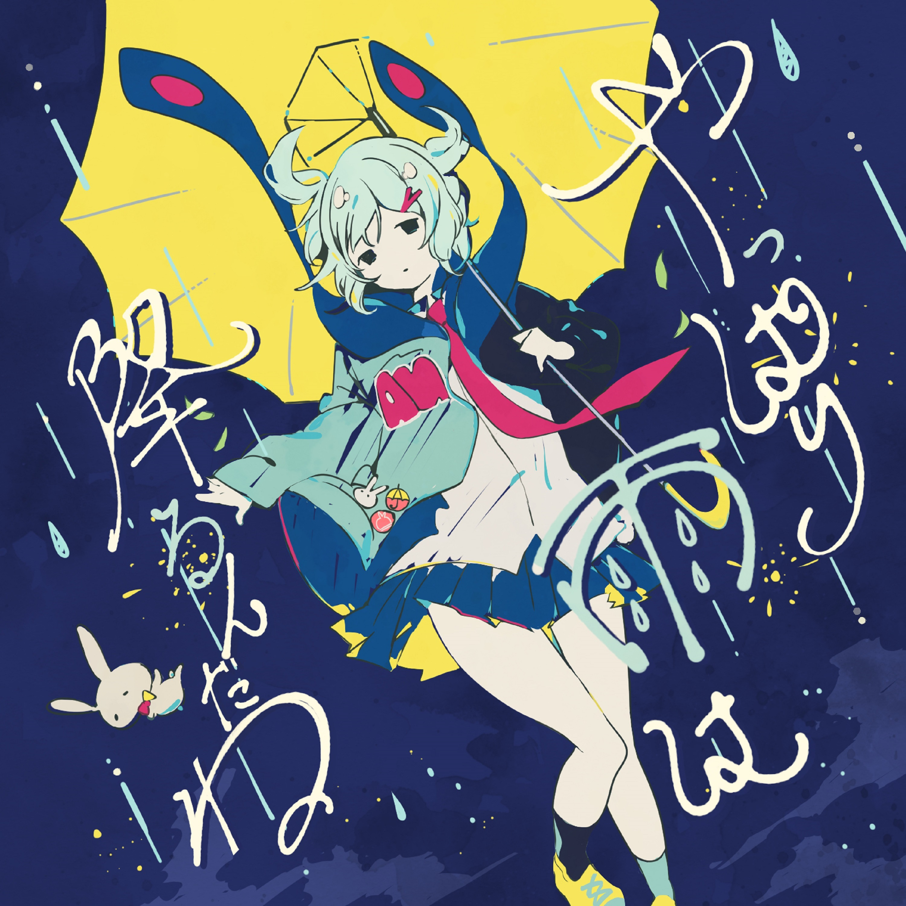

ロックな君とはお别れだ
ロックな君とはお別れだ
要和摇滚的你告别了
VOCAL_INTEL
サイバーセキュリティ
サイバーセキュリティ（网络安全）：保护计算机系统和网络免受数字攻击、损害或未授权访问的技术与实践。
例句：金融機関は顧客データを守るため、サイバーセキュリティを最優先している。（金融机构为保护客户数据，将网络安全视为首要任务。）
JAPAN_FEED
1. 政府强化供应链安全，推动国产化替代与法规合规。
2. 企业加大云与零信任投入，应对混合办公安全挑战。
3. 关键基础设施成攻击焦点，跨部门协同防御体系加速构建。
CVE_MONITOR
hyu164/TerrminusCVE20262406
SC: 7.5
专业研究引擎可分析检测Telnet中的CVE20262406漏洞。
💡 建议结合实时补丁管理和网络隔离措施强化防护。
obrunolima1910/CVE202624061
SC: 5.0
高危漏洞利用可导致未授权root访问
💡 立即更新inetutilstelnetd并禁用非必要服务
D7EAD/CVE202622722
SC: 7.5
VMWare Workstation Pro内核NUIF组件存在状态逻辑漏洞，可能导致权限提升或虚拟机逃逸。
💡 建议立即更新至官方最新版本并应用安全补丁。
fartlover37/CVE20262441PoC
SC: 5.0
概念验证展示了Chrome Blink引擎CSS解析中高危释放后重用漏洞的利用可行性
💡 建议立即更新Chrome至安全版本并避免访问不可信网页。
wutang700/STProcessMonitorBYOVD
SC: 8.5
利用CVE202570795和CVE20260828漏洞配合驱动工具实现Windows进程的利用与控制。
💡 建议立即更新系统补丁并部署驱动加载监控以防范此类攻击。
hamzamalik3461/CVE202620841
SC: 8.5
Windows记事本可通过Markdown链接利用未受保护的URL协议实现远程代码执行。
💡 建议立即禁用记事本中未经验证的URL协议处理功能。